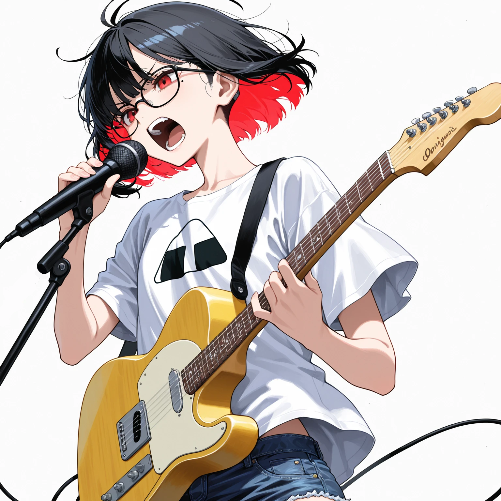

import human_emotion
from moz_system import heavy_noise
def analyze_pain(data_set):
# メモリリークした記憶を再起的にスキャン
return [exception for exception in data_set if heart_rate > 180]
MOZCRISICの楽曲は、精緻なアルゴリズムと肉体的な咆哮の衝突点にある。
データサイエンスの比喩で綴られる歌詞は、現代社会のシステムエラーを暴き出し、
スクリーモの轟音によってその「例外処理」を完遂する。
MEMBERS

Vo & Gt / Architect
ローズ20
石神・R・フローレンス
元プログラマー。バンドの設計者。おにぎりプリントのTシャツを纏い、データサイエンス用語を駆使したリリックで感情をコード化する。日本語と英語が激しく交錯するバイリンガル・スタイル。

Bass / Core_Module
淀23
御母衣 京子
皇族の血を引くお嬢様。袴姿で白いベースを操る。酒とタバコを愛し、メンバー内で最も「ロック」な生き様を貫く姿から、敬意を込めて「姐さん」と呼ばれている。基底を揺るがす圧倒的な重低音をシステムに送り込む。
Key & Scream / Overload
レナ22
斎藤 エレーナ
ロシア出身の美しき叫び手。ゴスロリ衣装で超絶技巧のキーボードを弾き倒し、システムをオーバーロードさせる咆哮を放つ完璧主義のナルシスト。日本語は苦手だが、「ロリータしか勝たん。」という口癖だけは執拗なまでに使いこなす。
Drums / Traffic_Control
ミオ21
ミオ・ロドリゲス
ヒスパニック系のエネルギッシュなドラマー。スポーツ万能であらゆる競技において秀逸な成績を残す身体能力を持つが、本人はそのボーイッシュな性格とガタイの良さを気にしており、内面はメンバーの誰よりも乙女チック。ワイルドな打法で正確なクロックを刻む。

DJ / Encryption
DJ JIWOO18
イ・ジウ
韓国出身。ビッグサイズのパーカースタイルで素顔を隠し、ノイズを暗号化してフロアへ撒き散らす。極度の恥ずかしがり屋で公の場では一切喋らないため、彼女が口を開く代わりに淀がその想いを言葉にする。寡黙な最年少DJだが、そのオーバーサイズな服の中には圧倒的な美貌を秘めている。